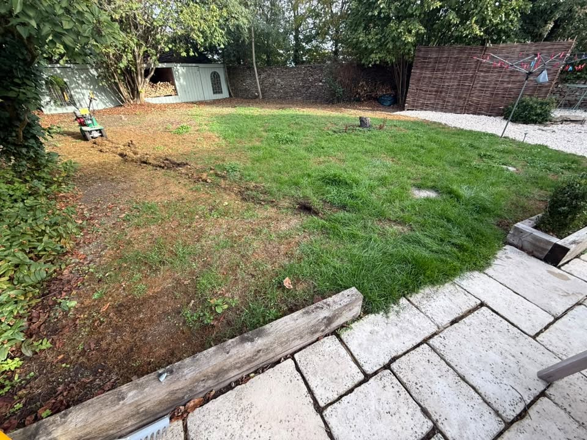
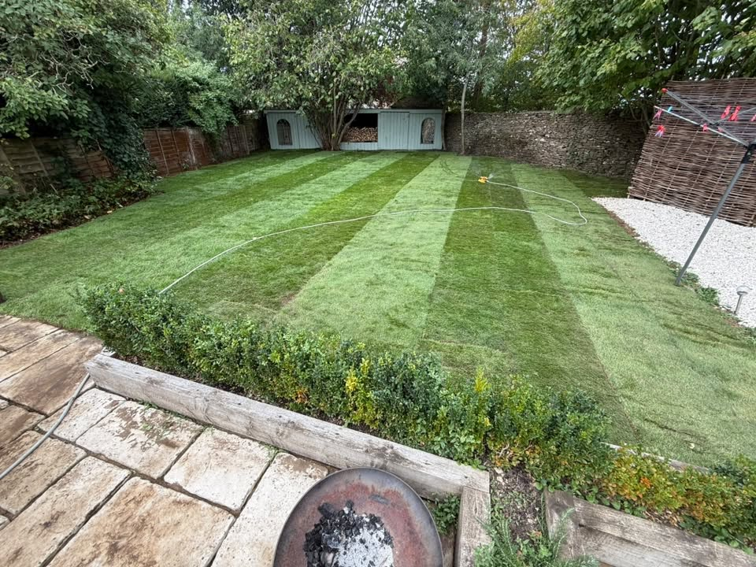
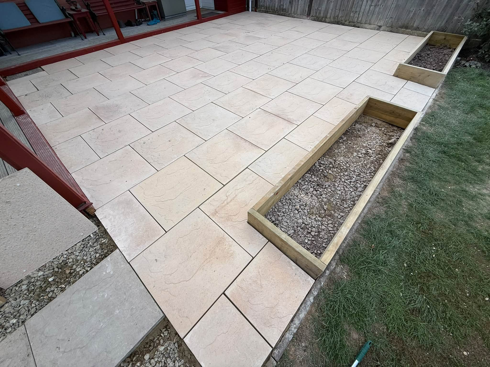
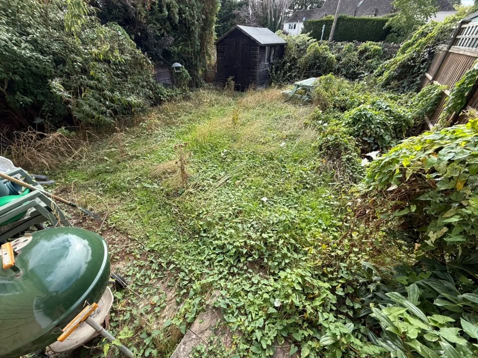
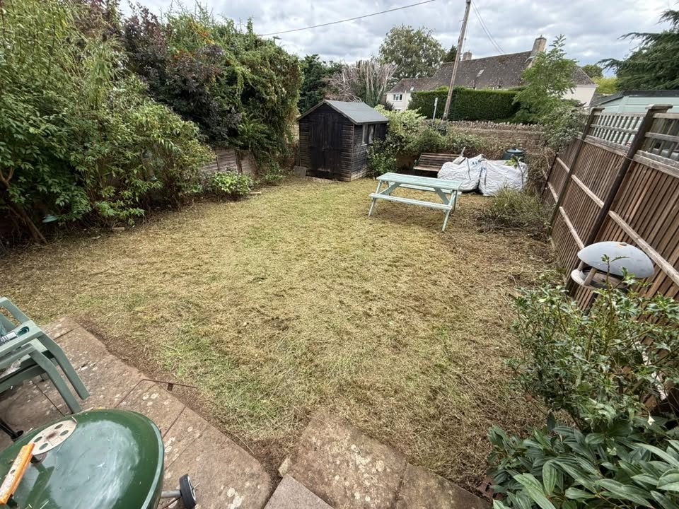
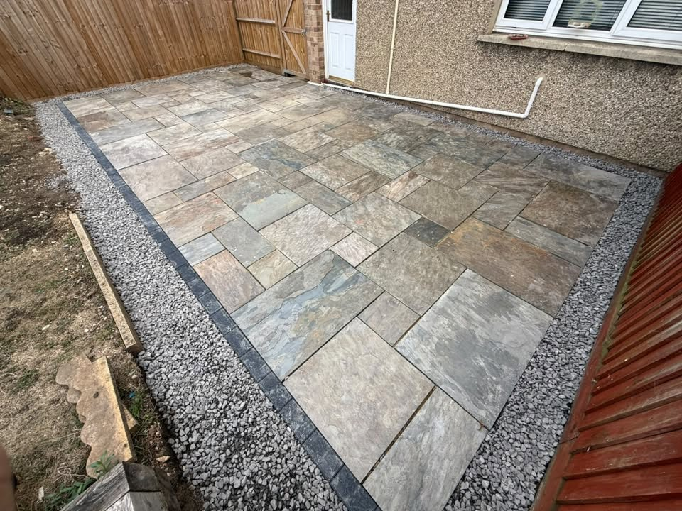
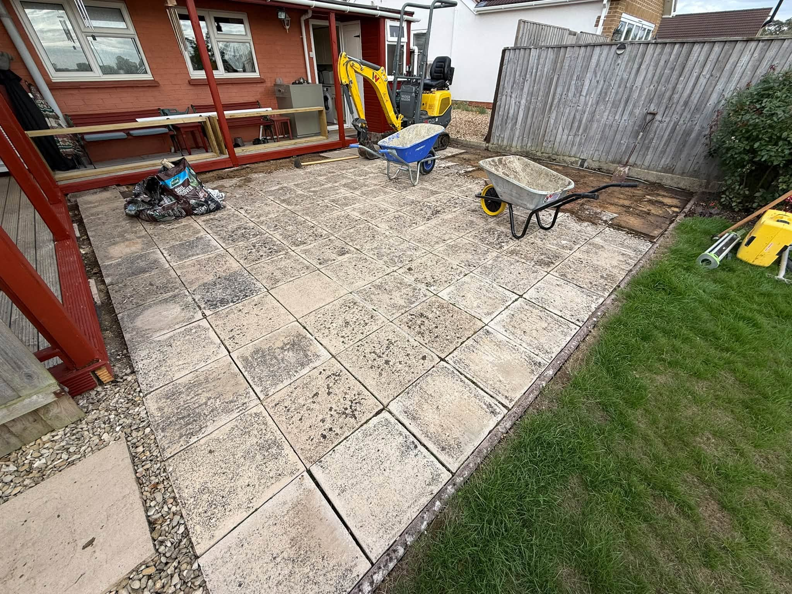
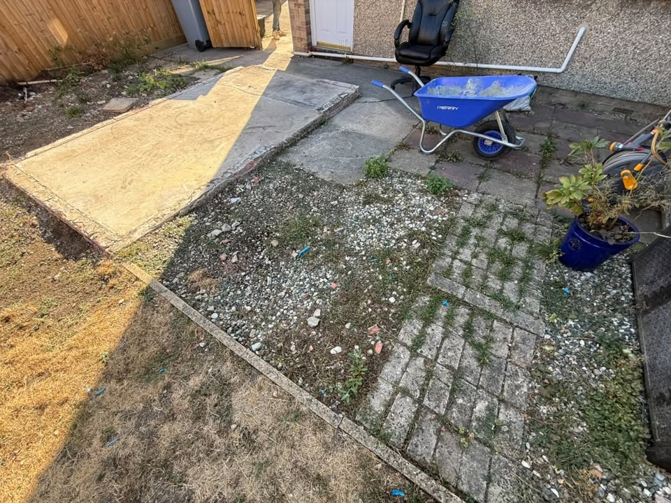

TRANSFORMATION 01
Fresh lawn transformation
A tired, patchy lawn renewed to create a greener, cleaner garden with a much stronger finish.


Professional gardening and landscaping, from regular garden maintenance to complete transformations. Friendly, reliable service across the Cotswolds.
Whether your garden needs regular care or a complete change, J Brown Gardens provides practical, professional landscaping and gardening services designed to make outdoor spaces cleaner, smarter and more enjoyable.

From lawns and borders to patios, fencing and ongoing maintenance.
Garden improvements and complete transformations tailored to the outdoor space.
Fresh lawns, planting and garden improvements that bring colour and structure back outside.
Practical outdoor living areas with clean finishes and layouts suited to the garden.
New boundaries, fencing and border work to make gardens feel tidy and complete.
Care and management for hedges, shrubs and garden trees.
Regular maintenance to keep lawns, planting and outdoor areas looking their best.
Real work supplied by J Brown Gardens, showing the change a well-planned garden job can make.
A tired, patchy lawn renewed to create a greener, cleaner garden with a much stronger finish.


An overgrown garden cut back and cleared, opening the space up and making it manageable again.





Based at Chestnut Close, Brize Norton, J Brown Gardens provides gardening and landscaping services across the Cotswolds.